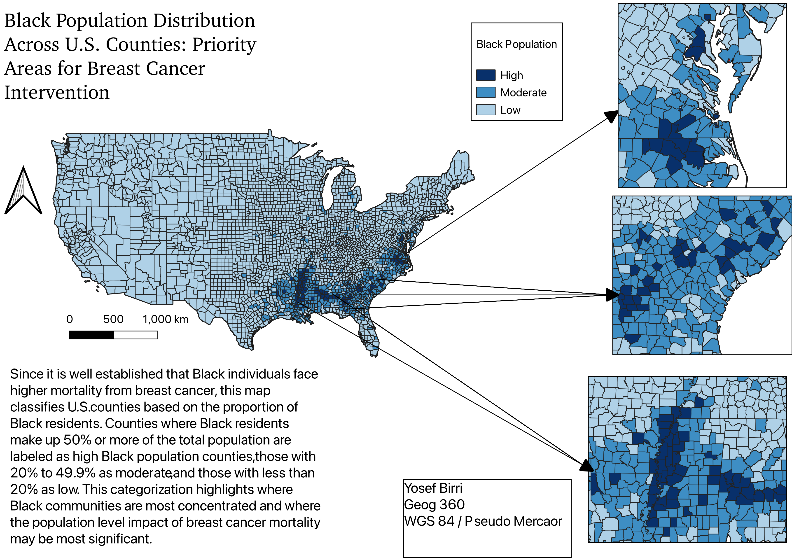
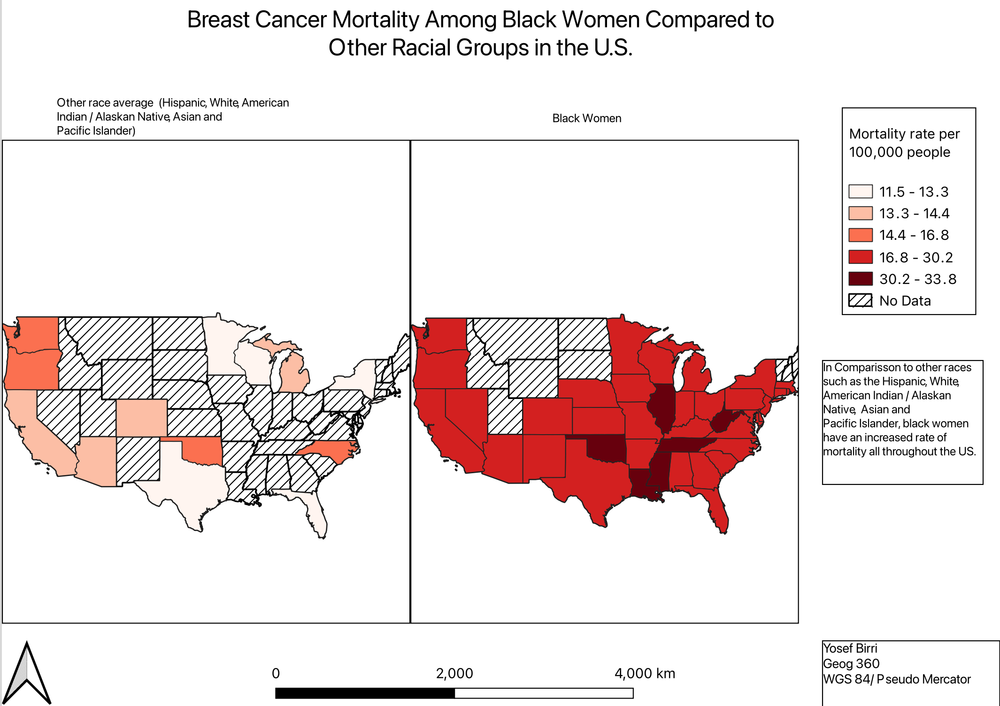

Project Overview
This project examines racial disparities in breast cancer outcomes across the United States by combining demographic and health data at the county level. Since breast cancer mortality is consistently higher among Black women, this analysis focuses on identifying where Black populations are most concentrated and how mortality rates differ by race spatially.
The maps created in this lab are intended to support public health planning by highlighting counties where the population-level burden of breast cancer mortality may be greatest and where targeted intervention efforts may be most impactful.
Data & Methods
- Demographic Data: U.S. Census county-level population data
- Health Data: Breast cancer mortality rates by race
- Spatial Unit: U.S. counties
- Software: QGIS
- Techniques: Choropleth mapping, data classification, spatial comparison
Population proportions and mortality rates were mapped using standardized classification schemes to allow comparison across counties and regions. Rates were used rather than raw counts to ensure meaningful spatial interpretation.
Map 1: Black Population Distribution Across U.S. Counties
Since Black individuals experience higher breast cancer mortality nationally, this map classifies U.S. counties based on the proportion of Black residents. Counties where Black residents comprise 50% or more of the total population are categorized as high Black population counties, those with 20% to 49.9% as moderate, and those with less than 20% as low.
This classification highlights where Black communities are most spatially concentrated and where the population-level impact of breast cancer mortality disparities may be most significant, providing a demographic context for identifying priority areas for public health intervention.
Map 2: Breast Cancer Mortality Rate by Race
In comparison to other racial groups, Black women experience higher breast cancer mortality rates across much of the United States. This map visualizes race-specific breast cancer mortality rates at the county level, revealing widespread geographic disparities that persist across regions.
By mapping mortality rates rather than raw counts, this visualization enables meaningful comparison across counties and highlights areas where inequities in health outcomes may reflect differences in access to screening, treatment, and broader structural healthcare resources.
Discussion
Together, these maps reveal that regions with high concentrations of Black residents often overlap with areas experiencing elevated breast cancer mortality among Black women. While population concentration alone does not explain mortality outcomes, the spatial patterns suggest that structural factors such as healthcare access, screening availability, and socioeconomic conditions play a critical role.
Identifying these geographic patterns can help inform more equitable public health strategies by directing prevention, screening, and treatment resources toward communities most affected by breast cancer disparities.